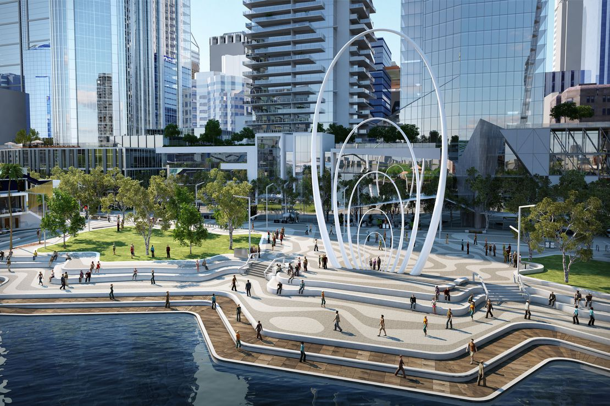
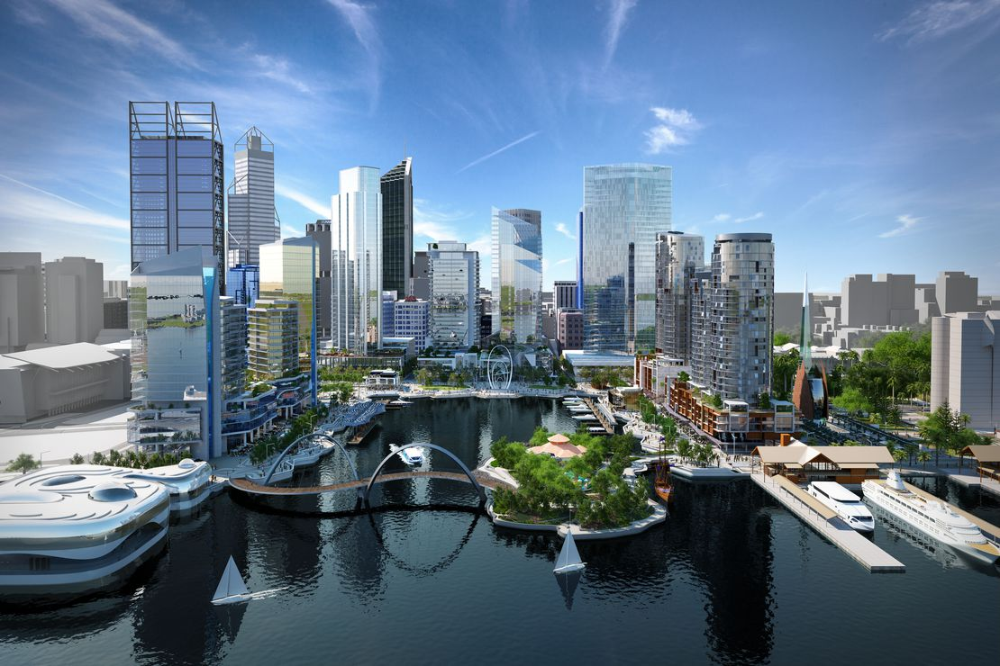
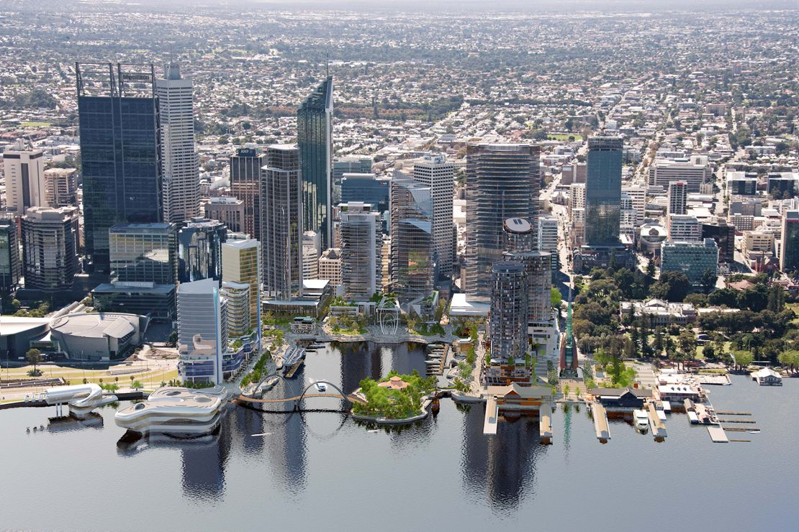
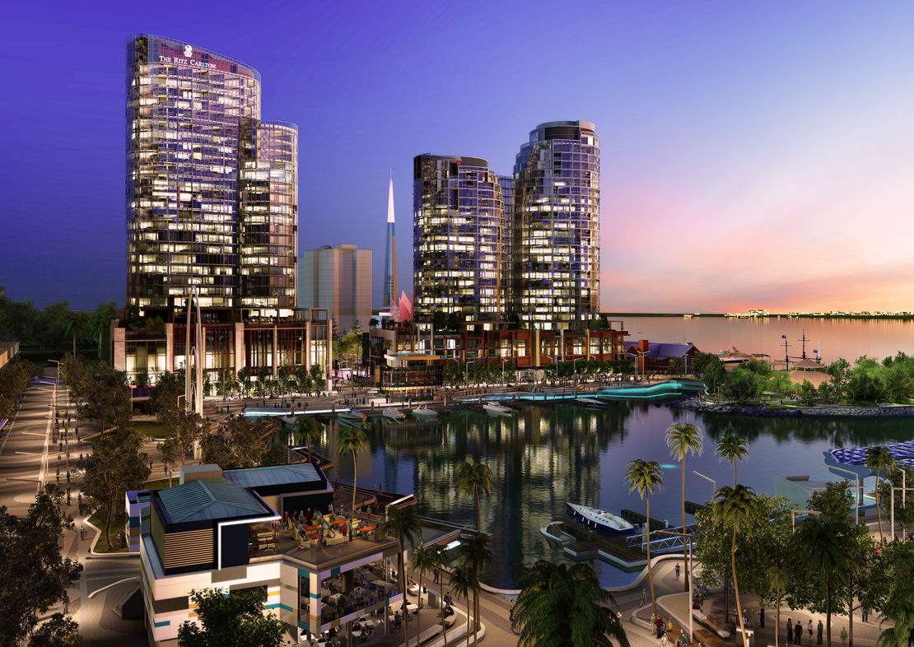

Elizabeth Quay
Role: Lead 3D Artist
Studio: Last Pixel
Year: 2015
Elizabeth Quay has been the flagship development of the current Perth government.
As Lead Artist I worked on all aspects of the project from pre-production through to the usual roles modelling/shading/lighting/rendering. There were a large amount of marketing, planning and proposal images created which I was also responsible for.
Elizabeth Quay - Perth from Last Pixel on Vimeo.



